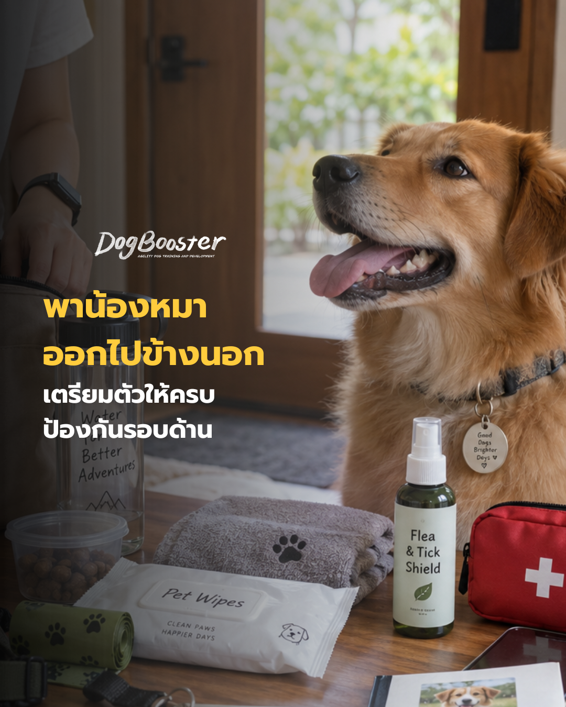

หลายคนมองว่าการพาน้องหมาออกไปเดินเล่นเป็นเรื่องง่าย แค่ใส่สายจูงแล้วเดินออกจากบ้านก็พอ แต่ในความเป็นจริง การออกไปข้างนอกหมายถึงการพาน้องหมาเข้าสู่สภาพแวดล้อมที่ควบคุมไม่ได้เต็มร้อย
ทั้งอากาศ พื้นผิวถนน สัตว์อื่น คนแปลกหน้า และเชื้อโรคที่มองไม่เห็น การเตรียมอุปกรณ์ให้ครบจึงไม่ใช่แค่เรื่องความสะดวก แต่เป็นส่วนหนึ่งของการดูแลสวัสดิภาพ (welfare) ของน้องหมาโดยตรง บทความนี้จะพาไปดูทีละส่วน ตั้งแต่ของพื้นฐานที่ทุกคนรู้จัก ไปจนถึงของที่มักถูกมองข้ามแต่สำคัญไม่แพ้กัน
สายจูงคือจุดเชื่อมต่อความปลอดภัยระหว่างเรากับน้องหมา ควรเลือกความยาวและวัสดุให้เหมาะกับขนาดตัวและพฤติกรรมของแต่ละตัว สำหรับน้องหมาที่ยังฝึกเดินสายจูงไม่คล่อง การใช้ รัดอก (harness) แทนปลอกคอรอบคอ จะช่วยลดแรงกระชากที่กระทบต่อหลอดลมได้
ความร้อนในบ้านเรา โดยเฉพาะช่วงกลางวัน ทำให้น้องหมาเสี่ยงต่อภาวะร่างกายร้อนเกิน (heat stress) ได้ง่าย การพกน้ำสะอาดและชามพับได้ติดตัวไปด้วยทุกครั้ง ช่วยให้หยุดพักเติมน้ำได้ทันทีที่สังเกตเห็นสัญญาณหอบหรือเหนื่อยล้า
ขนมไม่ได้มีไว้แค่ “เอาใจ” แต่เป็นเครื่องมือสำคัญในการเสริมแรงทางบวก (positive reinforcement) เมื่อน้องหมาแสดงพฤติกรรมที่เราต้องการ เช่น เดินข้างตัวโดยไม่ดึงสาย หรือหันกลับมามองเมื่อถูกเรียกชื่อ ท่ามกลางสิ่งเร้าภายนอกที่เยอะกว่าปกติ ขนมที่มีมูลค่าสูง (high-value treats) จะช่วยแข่งขันกับสิ่งเร้ารอบข้างได้ดีกว่าขนมทั่วไป
เป็นความรับผิดชอบพื้นฐานต่อพื้นที่สาธารณะและชุมชน ควรพกมากกว่าจำนวนที่คาดว่าจะใช้เสมอ
พื้นที่หญ้า สวนสาธารณะ หรือแม้แต่ทางเท้าที่มีพุ่มไม้ ล้วนเป็นแหล่งที่เห็บและหมัดสามารถกระโดดเกาะขนน้องหมาได้ นอกจากสเปรย์ป้องกันที่ใช้ก่อนออกจากบ้าน การหมั่นตรวจดูตามซอกขนหลังกลับถึงบ้านก็ช่วยลดความเสี่ยงของโรคที่เห็บและหมัดเป็นพาหะได้เพิ่มเติม
พื้นผิวสาธารณะอาจมีเชื้อโรคหรือสารเคมีตกค้างที่เรามองไม่เห็นด้วยตาเปล่า การเช็ดอุ้งเท้าและลำตัวก่อนกลับเข้าบ้าน โดยเฉพาะก่อนที่น้องหมาจะขึ้นเตียงหรือโซฟา ช่วยลดโอกาสนำสิ่งปนเปื้อนเข้าสู่พื้นที่อยู่อาศัยได้
หลังจากสัมผัสน้องหมา เก็บอึ หรือสัมผัสพื้นที่สาธารณะ การทำความสะอาดมือของเจ้าของเองก็เป็นส่วนหนึ่งของการป้องกันโรคติดต่อระหว่างสัตว์และคนที่มักถูกมองข้าม
การเตรียมตัวที่ครบถ้วนไม่ได้แปลว่าต้องพกทุกอย่างที่กล่าวมาทั้งหมดทุกครั้ง แต่ควรเลือกให้เหมาะกับระยะเวลา สถานที่ และสภาพอากาศของแต่ละทริป การเดินเล่นระยะสั้นแถวบ้านอาจต้องการแค่กลุ่มอุปกรณ์พื้นฐาน ในขณะที่การไปเที่ยวทั้งวันหรือไปในพื้นที่ที่ไม่คุ้นเคยควรเตรียมของในกลุ่มป้องกันรอบด้านเพิ่มเติมด้วย
หากน้องหมาของคุณมีพฤติกรรมตื่นตกใจ ดึงสายจูงแรง หรือแสดงอาการเครียดเมื่อออกไปข้างนอก ทีมผู้เชี่ยวชาญของ DogBooster ยินดีให้คำปรึกษาเพื่อวางแผนการฝึกที่เหมาะกับน้องหมาของคุณโดยเฉพาะ 🐾